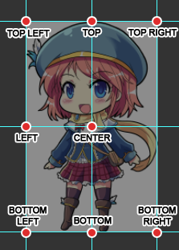
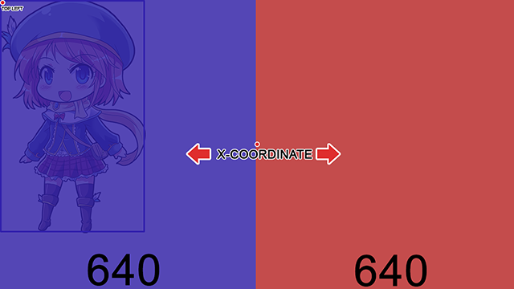
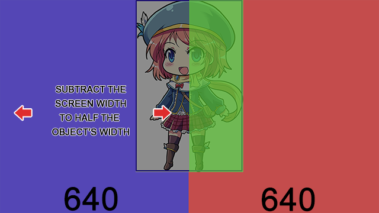

理解预定义位置
例如，您可以在“加入场景”中找到它：如果您需要复习几何坐标平面，这里有一些来自可汗学院的课程
。 您可以在数据库 ->系统
您可以在数据库 ->系统
中找到、修改和/或创建预定义对象位置。
理解对象

当您第一次看到预定义对象位置时，您会注意到有左上、顶部、右上、左下、底部、右下、左侧和中心。它们之所以这样命名，是因为目标对象的锚点。这里有一张图片来解释：
您可能会想，顶部、底部和中心有什么区别，因为它们本质上执行相同的功能；将角色置于屏幕中央。要理解区别，假设您想在屏幕上显示 Ace，然后他身体的邻近区域将显示如下：
这意味着，如果您想显示 Ace 的头部，您将选择左上、顶部和右上坐标。如果您想专注于他的身体，那么您将选择中心，以此类推。显示的邻近区域也取决于图像的宽度和高度；这意味着您甚至需要考虑图像的透明区域。所以，如果您想知道它是如何知道是显示在屏幕的左上角、左侧还是右侧的。
分解公式
所以我们知道要显示角色的哪个部分；但屏幕上的位置呢？看示例公式可能会让您望而却步，但别担心！它并不像您想的那么复杂。让我们分解一下顶部的公式。
return { x: (Graphics.width - object.dstRect.width * object.zoom.x) / 2, y: 0 }
它是如何工作的？
首先，我们需要知道屏幕的宽度。默认情况下，游戏内分辨率为 720p（1280x720）。
现在，让我们将屏幕宽度除以二 (2)。我们将得到 640。

但如果您显示对象（角色），它不会立即居中。它看起来会像这样：
现在，我们想居中对象，您需要将对象除以二 (2)，然后将其从屏幕的另一半中减去。
用伪代码表示，它应该看起来像这样：
x = (屏幕宽度 / 2) - (对象宽度 / 2)

假设您没有缩放对象，它看起来会是这样。视觉上，代码的作用是：
从头开始编写公式现在让我们从头开始简化它。记住数学中的运算顺序，PEMDAS（P arentheses（括号），E xponents（指数），M ultiplication（乘法），D ivision（除法），A ddition（加法），Subtraction（减法））。如果您不熟悉或只是需要复习代数，可汗学院有一个很棒的教程，您可以观看
。
首先，像这样写公式：
return { x: }
return { x: (Graphics.width - object.dstRect.width) / 2 }
现在，假设您以后可能想放大/缩小对象，我们就不能使用此公式。当对象被放大/缩小后，由于宽度和高度的变化，它们的位置也会随之改变。所以我们需要添加另一个变量。
return { x: (Graphics.width - object.dstRect.width * object.zoom.x) / 2 }
最后，我们将检查角色的 Y 坐标。由于这是顶部居中，我们只需要输入 0。
return { x: (Graphics.width - object.dstRect.width * object.zoom.x) / 2, y: 0 }
就这些了！如果您想了解如何为您的视觉小说使用预定义位置的另一个示例，请前往显示一个半身像！